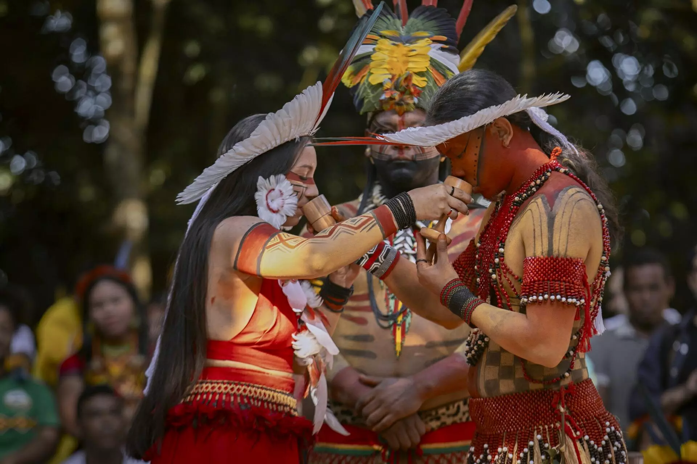
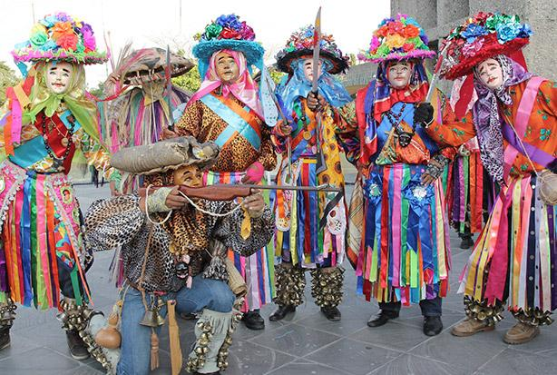
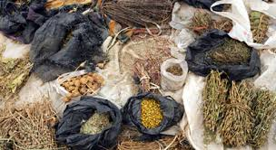

En las comunidades originarias son significativos los fogones a orilla de los ríos, ya que es ahí donde transmiten una gran cantidad de historias a las generaciones más jóvenes. Para los pueblos originarios, los rituales y las ceremonias son una forma de comunicación con la naturaleza y los ancestros, por eso son muy importantes para la construcción de la identidad indígena y deben ser preservados.
Las expresiones artísticas, como la música y la danza, tienen un papel fundamental y suelen estar relacionadas con rituales religiosos o sociales. Los ritmos, instrumentos y coreografías varían según la región y la etnia, pero comparten la función de ser un medio de conexión con los antepasados, la naturaleza y la comunidad. Las festividades como el Inti Raymi en Perú o la Fiesta de San Juan en varias comunidades indígenas de México y Centroamérica son ejemplos de celebraciones que mantienen viva su historia y cosmovisión.
Las culturas indígenas tienen un profundo conocimiento de su entorno natural, lo cual incluye el uso de plantas medicinales y prácticas de sanación. La medicina tradicional no solo aborda las enfermedades físicas, sino también las espirituales y emocionales, a través de curanderos, chamanes o médicos tradicionales. Este conocimiento es transmitido oralmente y es considerado un patrimonio cultural esencial, ya que aborda la salud desde una perspectiva holística.
La cultura indígena en América Latina es una riqueza viva que se manifiesta en su profunda conexión con la naturaleza, su sabiduría ancestral y su identidad colectiva. Las lenguas indígenas son un pilar esencial: cada idioma expresa una visión única del mundo y es fundamental para la transmisión de conocimientos, valores y costumbres. Idiomas como el quechua, el guaraní y el náhuatl mantienen vivas las historias, los mitos y la identidad de los pueblos, y representan una parte esencial de su patrimonio cultural. Otro elemento destacado es el arte indígena, especialmente a través de tejidos, cerámicas, joyas y cestería. Estas artesanías son mucho más que objetos decorativos; cada pieza refleja la identidad de la comunidad y contiene símbolos que representan la naturaleza, los antepasados y la vida en comunidad. Los patrones y colores utilizados cuentan historias, y su elaboración sigue técnicas tradicionales que se han transmitido de generación en generación. La relación de las comunidades indígenas con la tierra es profunda y está llena de respeto. La tierra no se ve como un recurso que se explota, sino como una madre que nutre y protege. Esta visión lleva a prácticas de agricultura y uso de recursos de manera responsable y sostenible, cuidando el equilibrio del ecosistema. En la vida diaria, este vínculo se traduce en un estilo de vida que busca minimizar el impacto ambiental, promoviendo un modelo de convivencia armónica con la naturaleza. En cuanto a la organización social, las comunidades indígenas valoran la colaboración y el respeto a la sabiduría de los mayores. Las decisiones suelen tomarse en asambleas comunitarias, donde todos los miembros tienen voz, y los ancianos tienen un rol especial como guías y guardianes de las tradiciones. Este sistema de organización fomenta el sentido de pertenencia y el trabajo en equipo, fortaleciendo los lazos sociales y asegurando que las tradiciones y valores se mantengan. En conjunto, la cultura indígena es un ejemplo de sostenibilidad, respeto y conexión con el entorno. Sus conocimientos y prácticas ofrecen una perspectiva de vida en equilibrio y colaboración, que inspira y enriquece la diversidad cultural de nuestra sociedad.